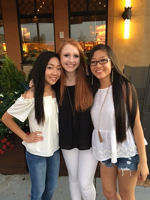

I was born in Japan on February 23rd, 2000. 7 months later, I moved to Greenville South Carolina. When I was 6, my sister Hannah was born, so we moved into a bigger house. 3 years later, my other sister, Karen, was born. I enjoyed school very much. I went to Mt. Zion, then transfered to Oakview in 2nd grade. Then, I went to Beck Academy for middle school. I had NO idea how bad high school would be. If I could go back in time, I would warn myself to NOT take calculus junior year, because it would cause me a lot of sadness and despair.
Currently, I live with my parents and my two sisters. Hannah is turning 10 this week, and goes to CTC. Karen is 6 or 7, and attends Monarch Elementary. My dad is an engineer.
I go to JL Mann High School and am in the 11th grade. I am in some clubs such as Key Club, Mann Nation, MLT, and French Club. My favorite class is Webpage Designs. I enjoy hanging out with my friends, shopping, listening to music, and watching movies in my free time. However, I shouldn't even be doing any of these things. I should be studying for APUSH and calculus, because I am FAILING! Ha ha ha!
In the future, I plan on going to a 4 year college. However, with my grades looking the way they do now, I won't be getting in anywhere! This means, I'm a failure! I would like to live in Greenville, where I've grown up, but I have also thought about living somewhere far away to experience something new. Either way, I'll be homeless because I will fail out of junior year.
By: Elissa Izumi 6th period